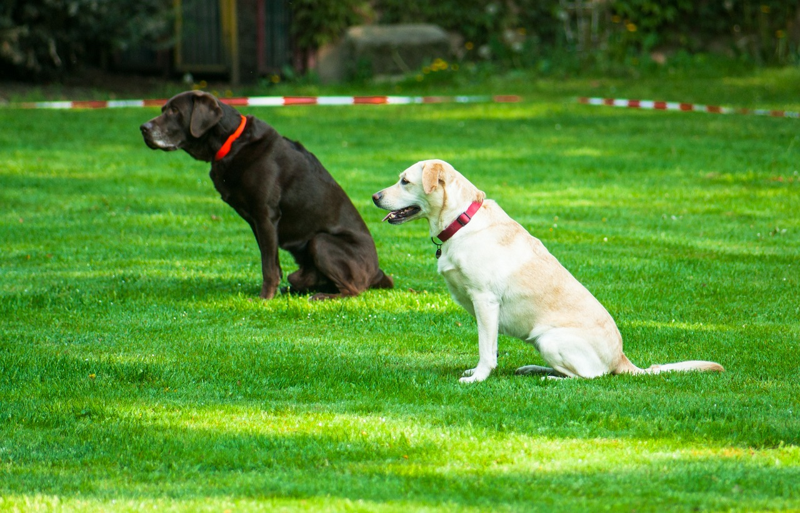

Ejercicios de socialización clave para el bienestar de tu animal

Photo: susanne906 / Pixabay
Un animal bien socializado tiene menos miedo de las visitas, los ruidos y otros animales. Socializar consiste en que viva, con suavidad y de forma positiva, personas, lugares y situaciones variados. Es más fácil con un animal joven, pero sigue siendo útil a cualquier edad.
Cuándo empezar
En el cachorro, el período más favorable va desde las primeras semanas hasta unos 3 o 4 meses. En el gatito, es aún más temprano, de unas semanas a unos 2 meses y medio. Si adoptas un animal adulto, puedes continuar, pero más despacio: quizá necesite más tiempo para adaptarse.
Las reglas básicas
- Ve a su ritmo: si se esconde, tiembla, baja la cola o aplasta las orejas, aléjalo de lo que le da miedo.
- Haz sesiones cortas, de unos minutos, y termina con algo positivo.
- Premia la calma con una golosina, un juguete o una caricia, sin forzarlo ni regañarlo nunca.
Conocer personas
Presenta a tu animal adultos, niños (siempre con supervisión) y personas con sombrero, gafas o paraguas. Pide a las visitas que dejen que se acerque él en lugar de inclinarse sobre él.
Descubrir lugares y ruidos nuevos
Acostúmbralo poco a poco al coche, a las escaleras, a la correa o al arnés, a la aspiradora y al timbre. Empieza con poca intensidad y auméntala despacio. Un gato se acostumbra primero a su transportín, dejado abierto en casa con una manta y golosinas dentro.
Conocer a otros animales
Antes de que el cachorro o el gatito termine sus vacunas, pregunta a tu veterinario qué contactos son seguros: en general, animales adultos que conozcas, sanos y vacunados, en un lugar privado. Evita los parques caninos y los lugares muy concurridos hasta que el veterinario lo permita. Los encuentros deben ser tranquilos y cortos, y debes poder interrumpirlos en cualquier momento.
Manipular a tu animal
Toca con suavidad sus patas, orejas, hocico y cola, y prémialo después. Así aceptará mejor los cuidados, el cepillado, el corte de uñas y el examen del veterinario.
Cuándo pedir ayuda
Si tu animal gruñe, muerde, se esconde sin parar o entra en pánico a pesar de tus esfuerzos, habla con tu veterinario. Podrá orientarte hacia un etólogo o un educador canino que trabaje con métodos positivos.